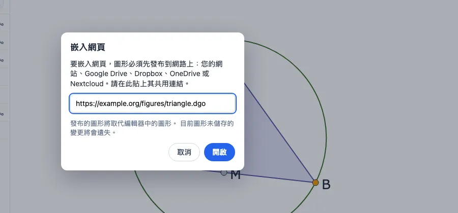
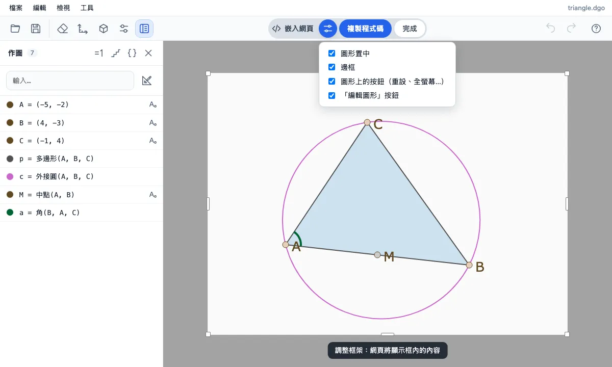
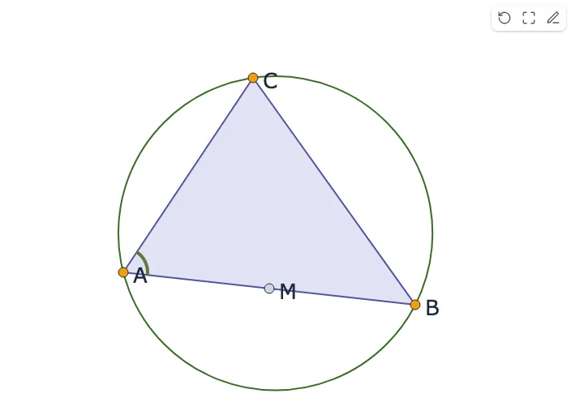

嵌入網頁
DocGeo 圖形可以顯示在任何網頁中——您的網站、Moodle 課程、部落格——並在其中像在 DocGeo 中一樣操作。只需把編輯器準備好的程式碼貼到網頁的 HTML 中。圖形會配合網頁的寬度，在手機上也一樣。
原理
網頁並不包含圖形：每次顯示時，它都會到您在網路上發布圖形的位置去讀取。因此：
- 必須先把圖形放到網路上，就像透過連結分享一樣；
- 要更新網頁，只需取代已發布的檔案：所有嵌入該圖形的網頁都會立即顯示新版本，無需修改它們的程式碼。
逐步操作
-
儲存圖形（Ctrl S），然後把
.dgo檔案放到網路上：您的網站、Google Drive、Dropbox、OneDrive 或 Nextcloud。複製其共用連結。 -
選擇檔案 › 嵌入網頁…。如果圖形不是透過連結開啟的，DocGeo
會詢問連結：貼上後點按開啟。已發布的圖形隨即取代編輯器中的圖形，從而確保程式碼可以正常運作。

- 圖形上會出現一個框：網頁將準確顯示框內的內容。拖曳其控制點（四角和各邊中點）可調整大小，拖曳其邊緣或標籤可移動它。取景時，您也可以縮放、移動視圖或旋轉三維圖形；圖形仍可操作。
-
如有需要，用複製程式碼左側的按鈕設定選項。

- 點按複製程式碼，然後把程式碼貼到網頁的 HTML 中。
- 完成或 Esc 移除該框。
選項
| 選項 | 作用 |
|---|---|
| 圖形置中 |
用
<center>
包住程式碼：圖形在網頁中置中。
|
| 邊框 | 圖形周圍的一條灰色細線。 |
| 圖形上的按鈕 | 圖形右上角的一個小工具列，滑鼠移到圖形上時顯示：重設圖形、全螢幕顯示。 |
| 「編輯圖形」按鈕 | 在該工具列上加入一個按鈕，在新分頁中用編輯器開啟圖形。例如，不希望學生看到作圖過程時，可取消勾選。 |
所有選項起初都已勾選；您的選擇會保留到關閉編輯器為止。
要貼上的程式碼
複製的程式碼類似這樣：
<center><iframe
src="https://…/index.html?fit=704,512,…&url=https://…/triangle.dgo"
style="width:704px;max-width:100%;aspect-ratio:704/512;border:1px solid #ccc"
allow="fullscreen" loading="lazy"></iframe></center>
要改變圖形在網頁中的大小，只需修改
width（單位為像素）：高度隨之變化，圖形保持框的比例。在較窄的螢幕上（例如手機），圖形會自動縮小（max-width:100%）。只有想讓圖形所佔區域換一種形狀時才修改
aspect-ratio，圖形在其中仍完整顯示並置中。fit=
後面的數字描述圖形顯示的內容，而不是它的大小：請不要修改。
把程式碼貼到網頁接受 HTML 的地方：直接寫進
.html 檔案、WordPress 的「自訂 HTML」區塊，或
Moodle 文字編輯器的 HTML（原始碼）模式。
在網頁中
在網頁中，圖形的操作方式與 DocGeo 相同：點、滑桿、核取方塊、按鈕……在空白處拖曳可移動視圖，三維時則旋轉視圖。滑鼠滾輪會像在其他地方一樣捲動網頁；要縮放圖形，請使用 Ctrl + 滾輪，或在觸控板上雙指捏合。
右上角的按鈕可以重設圖形（恢復為網頁開啟時的樣子）、全螢幕顯示，在勾選了相應選項時，還可以在編輯器中開啟圖形。

更新嵌入的圖形
透過連結在編輯器中開啟圖形（例如使用網頁上的「編輯圖形」按鈕），修改並儲存，然後在同一位置取代已發布的檔案，保留其連結：在 Google Drive 上，上傳檔案的新版本；在 Dropbox、OneDrive 或 Nextcloud 上，把新檔案以相同名稱放進同一資料夾。所有嵌入該圖形的網頁隨即顯示新版本，無需修改其程式碼。
如果只想改變取景，請再次選擇檔案 › 嵌入網頁…並複製新程式碼：已發布的檔案無需改動。
如果圖形在透過連結開啟後在編輯器中被修改過，DocGeo 會在顯示框之前提醒：在取代已發布的檔案之前，網頁顯示的仍是舊版本。
如果圖形沒有顯示
- 連結必須是公開的：Google Drive 上設為「知道連結的任何人」，Nextcloud 上使用不帶密碼的連結。
-
有些平台會從貼上的 HTML 中刪除
<iframe>，或只允許某些網站、某些使用者使用：請檢查您所用平台的設定。 -
從安裝在您電腦上的 DocGeo（位址為
localhost）複製的程式碼只能在這台電腦上使用：請從線上編輯器複製程式碼。 -
只有當
<iframe>帶有allow="fullscreen"屬性時才會出現全螢幕按鈕，複製的程式碼中已包含該屬性。